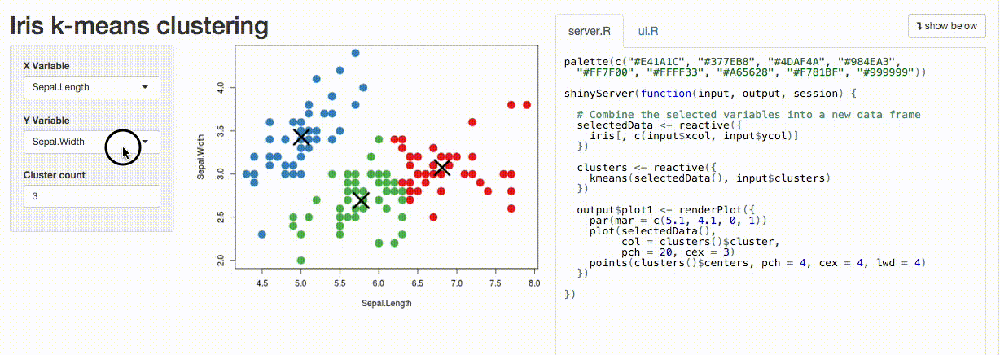
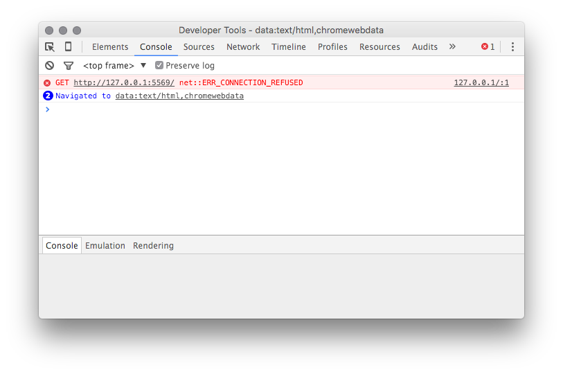
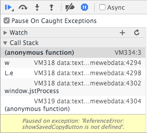

Debugging Shiny applications
Introduction
Debugging Shiny applications can be challenging. Because Shiny is reactive, code execution isn’t as linear as you might be used to, and your application code runs behind a web server and the Shiny framework itself, which can make it harder to access.
The goal of this article is to arm you with tools and techniques for debugging in Shiny specifically. If you’re interested in tools for debugging R more generally, we recommend reading Debugging with RStudio instead. The Debugging and Exceptions chapter in Hadley Wickham’s excellent book Advanced R is also extremely helpful if you’re new to debugging in R.
We’ll cover three main approaches:
Debugging
Pausing execution of your program, at a place you choose, to inspect its state as each following statement is executed. Best used when you suspect where a problem lies or need to verify the state around a particular section of code.
Tracing
Collecting information as your program runs, without pausing it, for later analysis. Best used when you’re diagnosing systemic issues (for instance, reactivity), when you can’t debug, or when frequent interruption is inappropriate.
Error handling
Finding the source of errors (both on the client and server side) and ascertaining their cause.
Debugging
Breakpoints
If you know, or suspect you know, where in the code the problem lies, the most straightforward debugging technique is setting a breakpoint. In RStudio, you can do this just by clicking to the left of the line number.

When you run your Shiny app, R will stop execution at the breakpoint, and you can begin stepping through your code.

While stepping, you can examine the contents of the environment and the callstack to see how execution reached your code, and what values it’s working with.
Currently, setting breakpoints inside Shiny applications is only possible in the RStudio IDE because no other R front end implements the Shiny debugging interface; the traditional R breakpoint utilities such as setBreakpoint don’t work with Shiny.
Breakpoint Limitations
Unfortunately, breakpoints aren’t helpful in all situations. For technical reasons, breakpoints can only be used inside the shinyServer function. You can’t use them in code in other .R files. And breakpoints can tell you something about why code is executing, but they can’t always tell you why something isn’t executing.
browser() statements
The browser() statement is another useful debugging tool. It acts like a breakpoint–when evaluated, it halts execution and enters the debugger. You can add it anywhere an R expression is valid.
Unlike breakpoints, browser() works everywhere, so it’s suitable for use in any code invoked by your Shiny app. You can also invoke browser() conditionally to create conditional breakpoints; for instance:
if (input$bins > 50)
browser()The downside of browser() is that you need to re-run your Shiny application to apply it, and you need to remember to take it out afterwards.
Tracing
In many cases it’s difficult to diagnose a problem by halting execution, and instead you need to observe the system as it runs. This is particularly true of Shiny applications since the system doesn’t run once through linearly as an R script does! We’ll look at a number of ways to peek into the system while it’s running.
Showcase Mode
If you’ve ever visited the Shiny Gallery, you’ve probably seen Showcase Mode. In Showcase Mode, your code is shown alongside your application, and your application’s server code flashes yellow when it executes. Here, for example, you can see the plot output chunk re-executing when the inputs change.

Showcase Mode is useful for visualizing which parts of your code are executing as a user interacts with your application. It is not enabled by default for privacy reasons (most people don’t want it to be easy for others to see their app’s code!), but it’s easy to turn on. Just invoke runApp directly with display.mode="showcase":
shiny::runApp(display.mode="showcase")If you want showcase mode to be on by default (for an extended debugging session, or if you want to use showcase mode in conjunction with the IDE Run App button), add a file named DESCRIPTION to your app’s folder, with these contents:
Title: My App
Author: Alice Smith
DisplayMode: Showcase
Type: ShinyThe Reactive Log
Another way to trace the execution of reactives at runtime is to use the Shiny reactive log. In addition to telling you which reactives are executing, the reactive log will help you visualize the dependencies between reactive objects, and give you very detailed information about what’s happening under the hood as Shiny evaluates your application.
Start a new R session and run the command:
options(shiny.reactlog=TRUE) Then, launch your Shiny app. In the Shiny app, press Ctrl+F3 to launch the reactive log visualization. It’ll look something like this:
The reactive log has many features and controls and we won’t belabor them here; for more information, visit the reactlog documentation website.
“printf” tracing
In some situations the best tracing technique is the oldest: a statement that emits text to the console when it’s reached. These are more work to use, but offer the unique advantage of allowing you to emit the values of variables without interrupting execution.
You can do this by using the cat command in your Shiny application to print to standard error (stderr()). For instance, from the sample Shiny application:
# generate bins based on input$bins from ui.R
x <- faithful[, 2]
bins <- seq(min(x), max(x), length.out = input$bins + 1)
cat(file=stderr(), "drawing histogram with", input$bins, "bins", "\n")After adding your cat statement, run your Shiny application and watch the R console. You’ll see a line emitted each time the code runs.
Listening on http://127.0.0.1:5757
drawing histogram with 30 bins
drawing histogram with 35 binsA note about stderr(): in most cases cat("my output") (i.e. printing to standard out) will work correctly, but in others (e.g. inside a renderPrint, which uses capture.output to redirect output), it won’t, so we recommend always sending trace output to stderr().
Tracing on Shinyapps.io
cat() is also one of the few tracing techniques which works well even on a remote system. If your application is deployed on RStudio’s ShinyApps.io service, then you can see the output the cat() traces in your deployed app, in real time. Here’s how:
- Add
cat(file=stderr(), ..., "\n")tracing statements to your application. - Deploy your application, using the RStudio IDE or the
rsconnect::deployApp()function. - From the application’s directory, run
rsconnect::showLogs(streaming = TRUE) - Navigate to the application (on ShinyApps.io) in your browser, and watch the R console for output.
You’ll see something like the following:
2016-01-29T01:26:12.291216+00:00 shinyapps[77594]:
2016-01-29T01:26:12.291218+00:00 shinyapps[77594]: Starting R with process ID: '26'
2016-01-29T01:26:14.162374+00:00 shinyapps[77594]: drawing histogram with 30 bins
2016-01-29T01:26:14.495249+00:00 shinyapps[77594]: drawing histogram with 35 binsIf your application gets a lot of usage, you may wish to guard the cat() output so that only your own sessions emit it, as it will be otherwise difficult to distinguish output from your own sessions with output from other sessions.
Tracing on Shiny Server
The cat(file=stderr(), ..., "\n") mechanism also works in Shiny Server. The trace output will be placed in a log under:
/var/log/shiny-server/*.logThere’s one log for each R process; you can tail -f the log file for any process to see output in real time. Because logs are deleted when the R process ends, you’ll only be able to see logs while your application is open (so don’t close your browser!).
You can read more about Shiny Server’s logging files/directories for individual Shiny apps in the Logging and Analytics section of the Shiny Server Professional Administrator’s Guide.
cat() Caveats
One thing to keep in mind while using cat() to trace values at runtime is that Shiny doesn’t give it special treatment–if your cat() expression references reactive values, a dependency will be created. This may cause your application to behave differently with the cat() statement than without it, which is obviously undesirable.
Make certain that any reactives referenced by the cat() statement are already referenced elsewhere in the observer or reactive in which it resides.
Client/Server Tracing
Shiny’s architecture consists of a client (the browser) and a server (an R process). The two are connected by a websocket that receives state changes from the client, such as new values for input controls, and distributes state changes from the server, such as new output values.
In some cases (for instance, if you’re writing your own custom bindings) it’s helpful to see exactly what’s going across the wire. You can watch the JSON emitted to and received from the websocket by turning on tracing:
options(shiny.trace = TRUE)Once tracing is on, you’ll se a lot of output in the console while your app is running. Here’s a sample:
SEND {"config":{"workerId":"","sessionId":"04531d50d12554bd981b24b9d3983cc4"}}
RECV {"method":"init","data":{"bins":30,".clientdata_output_distPlot_width":610,".clientdata_output_distPlot_height":400,".clientdata_output_distPlot_hidden":false,".clientdata_pixelratio":1,".clientdata_url_protocol":"http:",".clientdata_url_hostname":"127.0.0.1",".clientdata_url_port":"5569",".clientdata_url_pathname":"/",".clientdata_url_search":"",".clientdata_url_hash_initial":"",".clientdata_singletons":"",".clientdata_allowDataUriScheme":true}}The log is from the perspective of the client, so:
SEND indicates data sent from the browser to the R session.
RECV indicates data sent from the R session to the browser.
Another way to dig into the data available to the R session is to look at the session$clientData object. You can read more in this article on the Shiny developer center:
What about trace()?
If you’re a seasoned R programmer, you may have used the trace() function to add tracing without modifying your script. Unfortunately, it’s not possible to use this utility (or any that depend on it, such as setBreakpoint) with Shiny. trace() works by rewriting the body of the function to be traced, so the function must already exist when you run it. Shiny generates functions at runtime that aren’t easily addressable.
Errors
Some code defects will result in a runtime error. While no one likes to see errors, they can be an invaluable tool for helping you verify code preconditions at runtime. Often, throwing an error immediately when the system’s state becomes invalid (known as the fail-fast property) will save you debugging time, as an observed problem may be miles downstream from its source.
Whether you’re throwing your own errors or handling errors thrown elsewhere (for instance, by packages your Shiny application uses), here are some essentials for your toolkit.
R errors
Most of the errors you’ll be dealing with will be raised by R; here we’ll describe strategies for dealing with these errors.
R error tracebacks
In earlier versions of Shiny, it could be difficult to locate errors; they the error itself would be printed at the console, but it was always necessary to do some work to see where the error originated.
Thankfully the latest version of Shiny (0.13.0 at time of writing) includes a feature which automatically dumps not only the error but a stack trace indicating where the error occurred to the console.
Try, for example, introducing an error into the sample Shiny app.
bins <- seq(min(x), max(x), length.out = input$bins + 1)
if (input$bins > 40)
stop("too many bins")Now, run the app and drag the slider to the right to enter the error condition. The console will show you a stack trace: ```console Warning: Error in renderPlot: too many bins Stack trace (innermost first): 76: renderPlot [server.R#20] 68: output$distPlot 1: shiny::runApp
What are those numbers before the function names (76, 68, and 1)? They’re the indices into the call stack, which in this case contains nearly 80 calls. Most of those calls, though, are Shiny internals, which are hidden to make the stack trace easier to read. In the vast majority of cases, these internals won’t be relevant to your error.
If you do need to see the entire call stack, you can set:
options(shiny.fullstacktrace = TRUE)As you might imagine, this prints a very verbose stack strace!
Warning: Error in renderPlot: too many bins
Stack trace (innermost first):
79: h
78: .handleSimpleError
77: stop
76: renderPlot [server.R#20]
75: ..stacktraceon..
74: func
73: withVisible
72: func
71: <Anonymous>
70: do.call
69: ..stacktraceoff..
68: output$distPlot
67: ..stacktraceon..
66: orig
65: func
64: withCallingHandlers
63: captureStackTraces
62: withCallingHandlers
61: shinyCallingHandlers
60: doTryCatch
59: tryCatchOne
58: tryCatchList
57: doTryCatch
56: tryCatchOne
55: tryCatchList
54: tryCatch
53: observerFunc
52: doTryCatch
51: tryCatchOne
50: tryCatchList
49: tryCatch
48: contextFunc
47: env$runWith
46: withReactiveDomain
45: ctx$run
44: run
43: withCallingHandlers
42: captureStackTraces
41: withCallingHandlers
40: shinyCallingHandlers
39: doTryCatch
38: tryCatchOne
37: tryCatchList
36: tryCatch
35: flushCallback
34: FUN
33: lapply
32: ctx$executeFlushCallbacks
31: .getReactiveEnvironment()$flush
30: flushReact
29: withReactiveDomain
28: messageHandler
27: withCallingHandlers
26: captureStackTraces
25: withCallingHandlers
24: withLogErrors
23: handler
22: doTryCatch
21: tryCatchOne
20: tryCatchList
19: tryCatch
18: try
17: <Anonymous>
16: eval
15: evalq
14: doTryCatch
13: tryCatchOne
12: tryCatchList
11: doTryCatch
10: tryCatchOne
9: tryCatchList
8: tryCatch
7: run
6: service
5: serviceApp
4: withCallingHandlers
3: captureStackTraces
2: ..stacktraceoff..
1: runAppThe ..stacktraceon.. and ..stacktraceoff.. calls indicate where Shiny would ordinarily have collapsed the stack.
Pausing on errors
Sometimes, knowing where an error occurred gives you enough information to fix it. At other times, though, you’ll need additional context: What were the arguments to functions in the callstack? What were the values of local variables at the time the error occured? And so on.
You can cause Shiny to enter the debugger when an error occurs by using the following statement:
options(shiny.error = browser)When an error occurs, Shiny will run the function you name (here it’s our old frind browser()) and wait for it to return before handling the error. This gives you an opportunity to inspect the state of the system at the exact moment the error arose.

Now you can see, for example, the value of bins and x at the time the error occurred. There are some subtleties associated with error debugging, however:
Selecting a stack frame
Sometimes, the debugger won’t put you in the frame you expect. If this happens, use the Traceback pane in RStudio and click on the frame you’re interested in to see the code and values in that frame.
Note, however, that clicking on a frame won’t actually change the environment in which expressions entered at the R console are evaluated. If you want to actually browse the environment of a stack frame interactively, use recover() to select a frame.
Continuing after an error
The shiny.error function is invoked when an error occurs, but once the error has occurred, it’s too late to suppress it! You’re debugging, but there’s no next expression to step to; after you’re finished inspecting the error, continue in the debugger (type c or press Continue in RStudio) to let Shiny handle the error as it normally would.
JavaScript errors
Occasionally, a runtime problem will be caused by an error occurring in JavaScript. This is most common when working with custom bindings and third-party JavaScript components.
Most web browsers contain a JavaScript console that can be used to view logs and unhandled exceptions. We’ll focus here on Chrome since it’s widely used on all three major desktop platforms, but the other major browsers are structured very similarly.
To reach the JavaScript console in Chrome, do one of the following:
- Click on the “hamburger menu” in the upper right corner of the browser
- Navigate to More Tools -> Developer Tools.
Or, right click on the Shiny app and choose Inspect.
Once you have the developer tools open, click the Console tab. Here you’ll see any unhandled JavaScript exceptions; for instance, here’s an error raised when trying to load a Shiny app that’s no longer running:

Leaving the development tools open is also a good idea when looking for JavaScript issues; in most browsers, merely having the developer tools open is enough to cause the browser enter the debugger automatically when an unhandled exception occurs.
First-chance exceptions
The JavaScript console doesn’t tell you about all the JavaScript exceptions that were thrown, only those that were never caught. Sometimes, however, an exception that’s swallowed by an exception handler contains crucial information.
A little-known feature in most JavaScript debuggers will allow you to see exceptions when they’re thrown (regardless of whether they’re caught later). These are sometimes called “first chance” exceptions. You can break on them in Chrome by clicking the stop button labeled with pause (representing break on exception) and then checking the box “Pause on Caught Exceptions”.

If the thrown/caught terminology is confusing to you, remember that the debugger typically pauses on uncaught (or unhandled) exceptions; you’re asking it to pause on caught (handled) exceptions too.
There are great reference materials online available for most browser debugging tools (here’s one for Chrome).
RStudio Desktop
On Windows and Linux, there’s a JavaScript console and debugger built into RStudio (many components of RStudio, including the window that displays Shiny applications, is built on an embedded copy of QtWebKit. You can’t access it through a menu, but you can by right-clicking on your Shiny application and choosing Inspect.
On OS X, RStudio uses your system’s version of Safari to show Shiny applications. By default, Safari’s JavaScript debugging tools are turned off inside RStudio, but you can turn them on using this command in Terminal:
defaults write org.rstudio.RStudio WebKitDeveloperExtras -bool trueRestart RStudio, start your Shiny app, right-click on it, and you’ll see a new Inspect Element option. Click it to launch the Safari JavaScript debugger.

Asking for Help
Some bugs won’t yield to even the most determined attempts at analysis, and you’ll need to enlist the help of a second set of eyes. Fortunately there are several active forums where you can ask questions. Two we recommend are ‘shiny’ at StackOverflow and the shiny-discuss Google group.
When asking for help, try to eliminate all the parts of your application that aren’t related to the problem, so that anyone volunteering to help can understand the issue quickly. You’ll often find that the process of isolating the problem and formulating a description leads you to the answer before you can post the question!
The article How to get help on the Shiny Developer Center describes in detail what you’ll want to include when asking for help.
Learn more
For more on this topic, see the following resources: